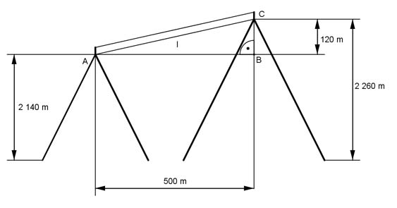

Pythagoras Aufgabe 34 Eine Seilbahn führt von einem Berg (2 140 m) zu einem anderen (2 260 m). Die beiden Masten der Seilbahn sind jeweils 10 m hoch. Sie sind auf einer Karte mit dem Maßstab 1 : 10 000 5 cm auseinander. Berechnen Sie die Länge l des gespannten Seils in m, wenn es nicht durchhängt.  Die Länge der Strecke AB entspricht der Länge l. Länge der Strecke AB: 5 cm auf der Karte entsprechen 5 * 10 000 cm = 50 000 cm = 500 m = AB Die Höhendifferenz BC beträgt 2 260 m - 2 140 m = 120 m Satz von Pythagoras im Dreieck ABC: l² = AB² + BC² l² = 500² m² + 120² m² = 264 400 m² |√ l = 514,2 m